Lesson 1: Introduction to CSS
Introduction

The introduction explains that the computer we know today did not appear instantly. It is the result of many improvements and inventions made over time. It started in the 19th century when an English mathematics professor named Charles Babbage created the first design of a computer. His idea became the foundation for how modern computers work today.
Types of Computers
- The most powerful and advanced type of computer. It is used by big companies and organizations for special tasks like weather forecasting, research, and exploration.
Supercomputer

- Large and expensive computer that can handle many users and programs at the same time. It can process and store a huge amount of data and is usually kept in big, air-conditioned rooms because of its size.
Mainframe Computer
.jpg)
- Also known as midrange computers. It features all the functions of a large size computer, but has a smaller size. Minicomputers can support many users because of its multi-processing system.
Minicomputer
.jpg)
- Most widely used and fastest growing type of computer. Desktop computers, laptops, tablets, and smartphones are types of microcomputers.
Microcomputer
.jpg)
Fundamental Elements of a Computer
.jpg)
- This is where data and instructions enter the computer. They allow the user to communicate with the computer.
- Examples: Keyboard, mouse, scanner, microphone.
- This is the main part of the computer that processes the data. It processes and stores data, executing commands from input devices.
- It contains important components like the CPU, memory (RAM), storage (HDD/SSD), and motherboard.
- These display or produce the results after the computer processes data. They show the final output in a form that people can understand.
- Examples: Monitor, printer, speakers, projector.
Input unit
System Unit
Output Devices
- Processing devices are the computers circuitry in the system unit.
Processing devices

- Motherboard is the circuit board housing the memory and the central processing unit (CPU)
Motherboard

- Central Processing Unit (CPU) is manipulates input data into the information needed by the users
Central Processing Unit (CPU)

- Memory is also known as Random Access Memory or RAM. It is a series of electronic elements that act as temporary storage of data and program instructions while the instructions are being processed by the CPU.
Memory

- These make up the CPU and the memory; these are electronic devices that contain many microscopic pathways designed to carry electrical currents.
Chips
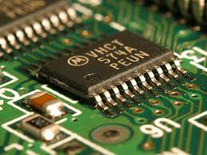
- Storage devices store data and programs. These hold data, information, and programs permanently.
Storage Devices
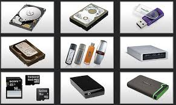
- mass storage device that stores data in a permanent state even without power. Similar to an HDD’s function, only the internal components are different. SSDs do not have moving parts but store data on magnetic platters making use of flash memory.
Solid State Drive (SSD)

- often called hard drive or hard disk. This is the most common storage device that do not need power to maintain data; these store data through spinning platters or magnetic disks, recording individual bits written into the disk.
Hard Disk Drive (HHD)
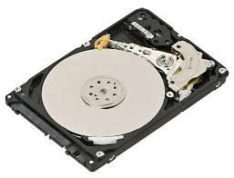
- Highly portable small data storage devices making use of flash memory and a Universal Serial Bus (USB) port connection
Flash Drive

- This storage device can hold up to 700 MB; it is read by an optical drive through a laser
Compact Disc (CD)
- Input devices allow the user to communicate with the computer by entering data or commands.
- Primary input device used to input alphanumeric data and commands to the computer
Input Devices
Keyboard

- Primary input device used to navigate and interact with the monitor output
Mouse

- Scans documents and converts them digitally, which can be edited on a computer.
Scanner

- Small cameras attached to a monitor or desk that record or broadcast video.
Webcam
- Device used to control video games, aside from the keyboard
Joystick
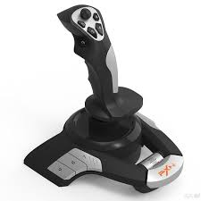
- Output devices enable the computer to show the processed data and information understandably to the user.
- Prints paper documents, photographs, and other outputs called hard copies which are physical versions of the documents.
Output devices
Printer

- acts as the primary display of the unit where the user interface and programs are reflected.
Monitor
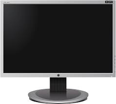
- Sound system device that produce audio output from the computer.
Speaker
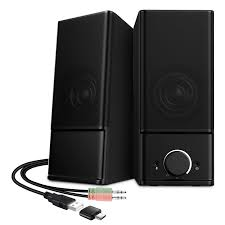
- The System Unit is the main part of the computer that holds the processor, memory, and other electronic parts used to process data. All input and output devices are connected to it. It is enclosed in a computer case, which protects and supports the internal components.
The System Unit

- The Computer Case is the box that contains and protects the computer’s internal parts. It prevents damage from static electricity and helps keep the parts cool with vents and fans. It is usually made of plastic, steel, or aluminum and comes in different sizes called form factors.
Computer Case
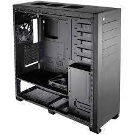
- Other names for a computer case include chassis, cabinet, tower, box, or housing.
- Tower – Full, Mid, Mini
Types of Computer Cases
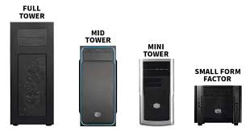
- Desktop – Standard, Slimline
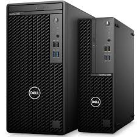
- Power supplies serve as the source for electricity to the computer. Attached are vital hardware cables and buses for transferring power to various components in the computer.
Power Supply

- ATX 24 pin main power connector is the standard motherboard power connector used in nearly every computer.
- SATA 15 pin power supply connector is one of several standard peripheral power connectors. SATA power connectors only connect to SATA drives like hard drives and optical drives. SATA power connectors do not work with older PATA devices.
- Molex 4 pin power supply connector is a standard peripheral power connector. Molex power connectors connect to many different kinds of internal peripherals including PATA hard drives and optical drives, some video cards, and even some other devices.
- Floppy drive 4 pin power supply connector is the standard floppy drive power connector. The floppy power connector, also called a Berg connector or Mini-Molex connector, is included in even the newest power supplies even though floppy drives are becoming obsolete.
- ATX 4 pin power supply connector is a standard motherboard power connector used to provide +12 VDC to the processor voltage regulator. This small connector usually attaches to the motherboard near the CPU.
- ATX 6 pin power supply connector is a motherboard power connector used to provide +12 VDC to the processor voltage regulator but the 4-pin variety is the more commonly used connector. This small connector usually attaches to the motherboard near the CPU.
Basic connector in a power supply:
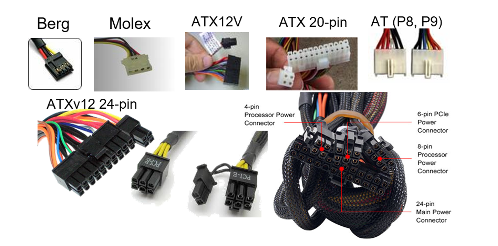
- The motherboard is also known as mainboard, system board, logic board, or MOBO. It holds and allows communication between the crucial components of the computer such as the CPU and memory. It also provides connection for other peripherals. This provides the path which the processor (CPU) communicates with all the components of the computer.
Motherboard

- small piece of semiconducting material, where more integrated circuits are embedded. They have standard-sized pin connectors that allows them to be attached to the motherboard.
SEVERAL COMPONENTS THAT ARE ATTACHED TO THE MOTHERBOARD:
Chip

- an electrical path that enables data flow between various system components.
Bus
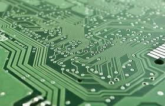
- contains microscopic pathways that carry electric current. The IC contains millions of elements such as resistors, capacitators, and transistors. Many different kinds of chips are located in the motherboard
Integrated Circuit (IC)
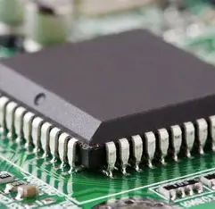
- this is the central processing unit on a chip.
Microprocessor
- this has two parallel rows of pints that attach the chip package to the circuit board.
DIFFERENT VARIETY OF CHIP PACKAGES:
Dual Inline Package (DIP)

- holds a larger number of pins because the pins are mounted on the surface of the package.
Pin Grid Array (PGA)
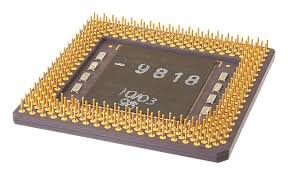
- higher performance PGA packaging that places the chip on the opposite sides of the pins.
Flip Chip-PGA (CF-PGA) Package
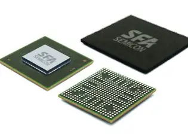
- does not use pins but connects to one of the edges in the motherboard.
Single Edge Contact (SEC) Cartridge
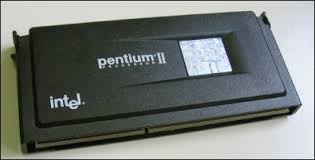
- AT – Advanced Technology
- ATX – Advanced Technology Extended
- Mini-ATX – Smaller footprint of ATX
- Micro-ATX – Smaller footprint of ATX
- LPX – Low-profile Extended
- NLX – New Low-profile Extended
- BTX – Balanced Technology Extended
There are different types of motherboard form factors:
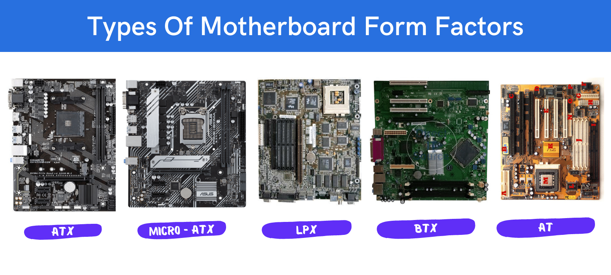
- The northbridge connects the CPU to fast parts like the RAM and video card, while the southbridge connects to slower parts like hard drives and USB devices.
NORTH AND SOUTH BRIDGE:
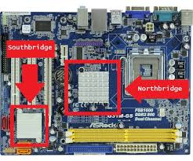
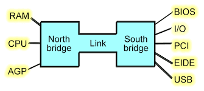
- The CPU, also called the processor, is the brain of the computer. It processes data, runs instructions, and controls most computer operations.
- Since it produces heat, a fan and heat sink are used to keep it cool.
Central Processing Unit (CPU)
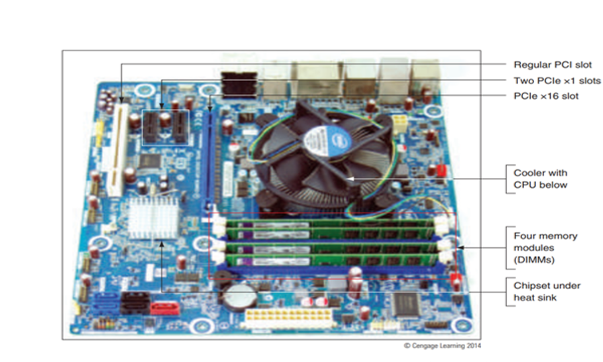
- Modern CPUs have multiple cores (multi-core processors), which make them faster and more efficient:
- Dual Core – has 2 processors in one chips
- Quad Core – has 4 processors in one chip
- AMD and Intel are the two most popular brands of processors in the market nowadays:
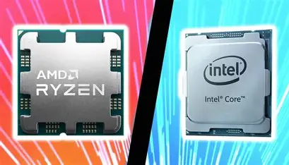
- RAM is the computer’s temporary storage. It holds data while the computer is running and changes as programs are used. RAM chips are placed on the motherboard and work using electric signals.
Random Access Memory (RAM)
- 1. Dynamic RAM (DRAM) - This kind of RAM needs to be recharged by the CPU. If not, it loses its contents. There are many variations of DRAM such as:
- Synchronous DRAM (SDRAM) - faster than DRAM because it is synchronized to the system clock
Three basic types of RAM:
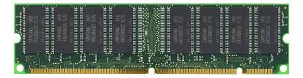
- Double Data Rate (DDR) SDRAM - faster than SDRAM because they transfer data twice for each clock cycle
- DDR1, DRR2, DDR3, DDR4, and DDR5 SDRAM – faster than DDR SDRAM

- Rambus DRAM (RDRAM) – type of DRAM faster than SDRAM that uses pipelining techniques
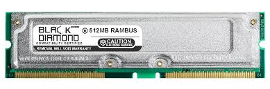
- 2. Static RAM (SRAM) - This kind is faster and more reliable than any form of DRAM. Unlike the DRAM, this does not need to be re-energized. However, it is much more expensive and it used for special purposes.
- 3. Magnetoresistive RAM (MRAM)- This kind stores data using magnetic charges instead of electrical charges. It has greater storage capacity, consume less power, and faster access times.
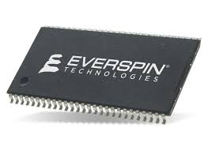
- 1. Single Inline Memory Module (SIMM)– this has pins on opposite sides of the circuit board which connect together to form a single set of contacts. This houses SDRAM chips along with DIMMs.
- 2. Dual Inline Memory Module (DIMM)– the pins on the opposite sides of the circuit board do not connect and form two sets of contacts. This houses SDRAM chips along with SIMMs.
- 3. Rambus Inline Memory Module (RIMM)-this houses RDRAM chips
Three types of memory modules:
- Cooling technologies are essential in avoiding the computer from overheating and maintaining a good, well-ventilated system.
Cooling Technology
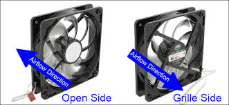
- Fans are also present in several components such as the power supply, ports, processor, hard disk etc.
- Heat Sink, on another hand, is a small metal or ceramic component with fins on the surface which absorbs and distributes heat produced by electrical components.
- Heat pipe is used on smaller devices like notebook computers since this is smaller in size.
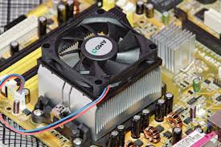
- A motherboard has expansion slots for expansion cards. These cards, also called adapter cards, add more ports to the computer.
- The picture shows a Video Card with three video ports. It has a cooling fan and heat sink to prevent overheating. Today, most ports are already built into the motherboard, so fewer expansion cards are needed.
- There are different types of expansion cards like network cards, sound cards, video capture cards, and interface cards. These cards are used to add features or improve the computer based on the user’s needs.
Expansion Cards
- The motherboard has ports, sockets, slots, and connectors that connect the computer’s parts and input/output devices. Ports are usually found on the side of the motherboard or at the back of the system case.
Port, Socket, Slot & Connector
PORT
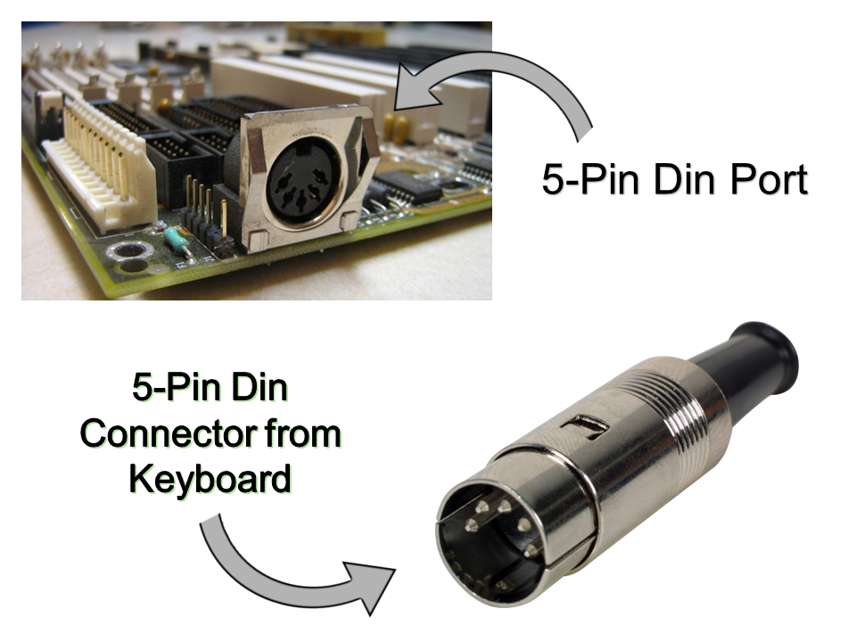


SLOT


SOCKET

CONNECTORS